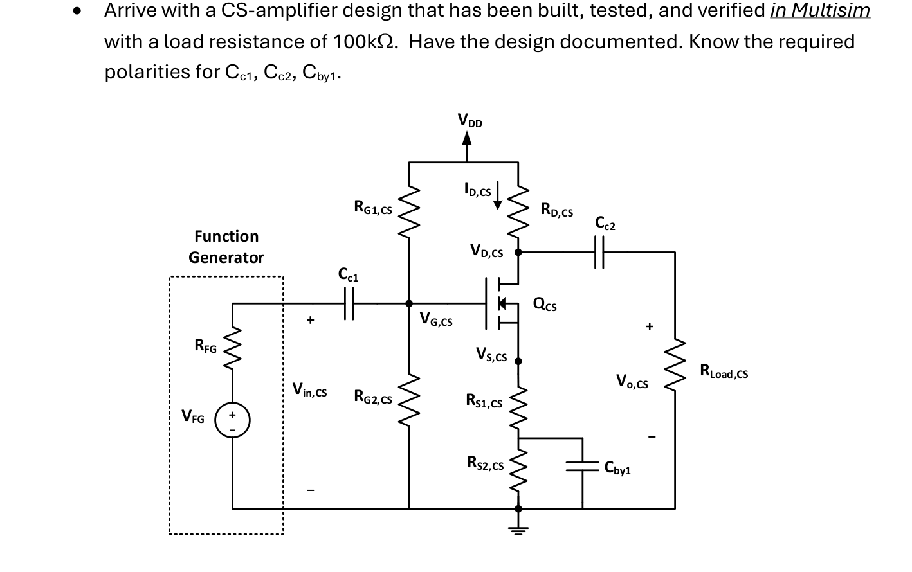
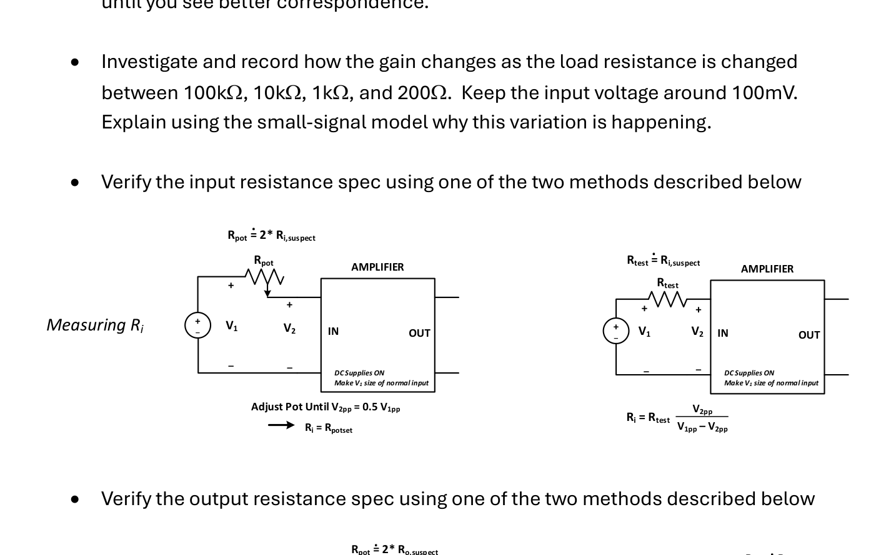
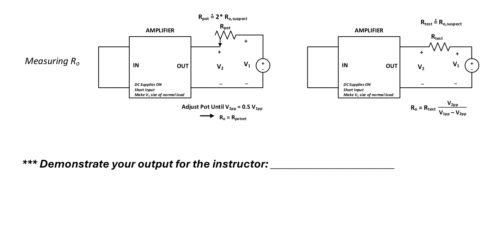
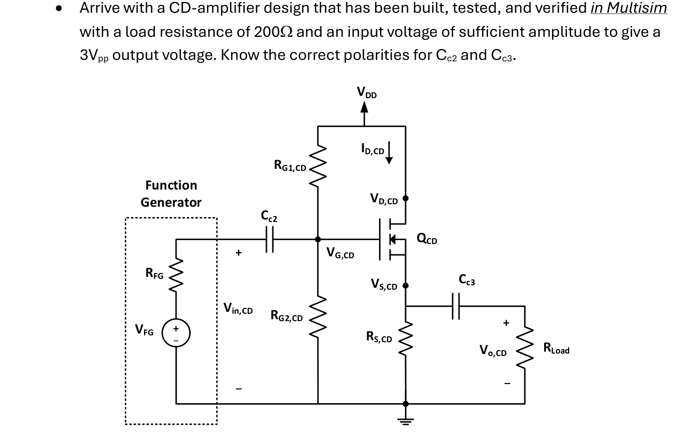
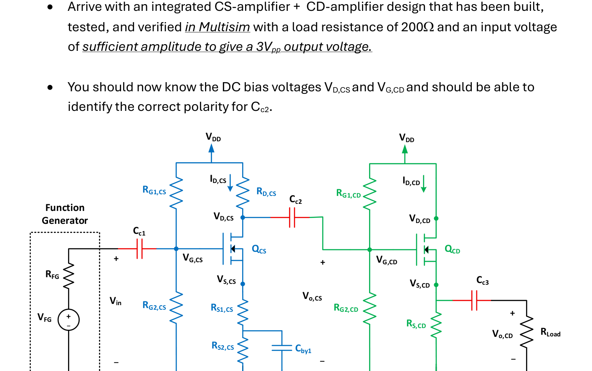
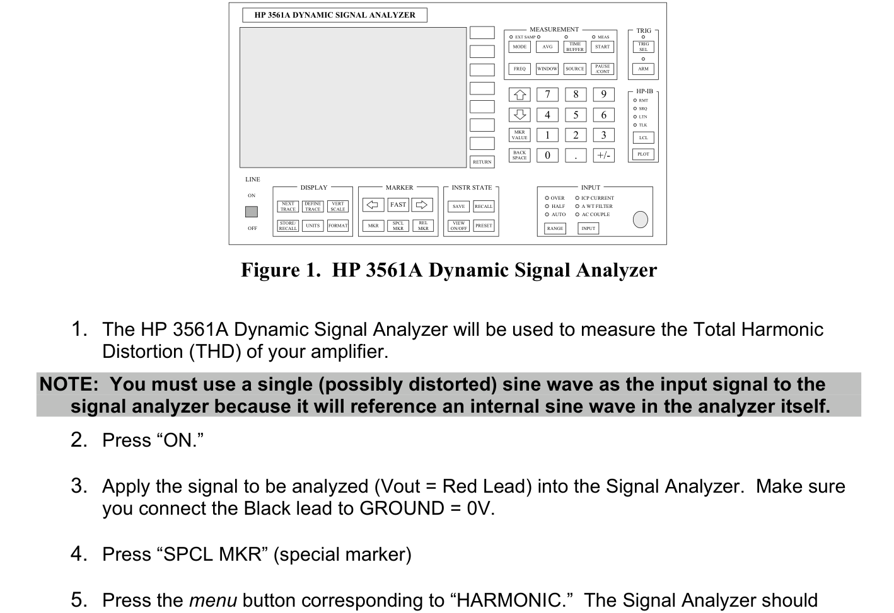

LABORATORY EXPERIMENTS & HANDOUTS
ECE 321: Laboratory Handouts & Instructions
Complete laboratory assignment guides, prelab requirements, measurement procedures, schematics, and analysis prompts for Labs 1, 2, and 3.
Lab 1: Diode Characterization and Voltage Regulator Lesson 7
Lab Exercise #1 Handout (v4, Fall 2026)
ECE 321 Lab Exercise #1 v4 F26
“Diode Characterization and Voltage Regulator”
Part 1: Diode Characterization
We will use a variable power supply and four different resistors to sweep the operating range of a 1N4150 diode (DO-35 package). The circuit we will use is shown next (from the prelab)
We will use the values of RLim shown in the table below and collect up the current values to the right of those.
RLim
Required Currents to be Measured
24k (1/4W)
100A
200A
400A
800A
2.4k (1/4W)
1mA
2mA
4mA
8mA
240 (1/4W)
10mA
20mA
56 (1W)
40mA
80mA
100mA
Your procedure should capture the following: (1) the VCC source should always be zeroed out before taking any measurements for a given resistance value; (2) you should be able to just swap in and out the new resistors; (3) ensure that the ammeter is always reading DC (press the orange top button indicated to get DC); (4) use the appropriate ammeter scale (mA vs mA) based on your measurement range; (5) slowly increase the DC voltage until your ammeter reads approximately the desired lowest current; (6) record the diode current and voltage; (7) continue increasing VCC until you’ve captured each data point for that RLim.
Once you have the 13 data points, use your pre-lab curve fit process to find “n” and “IS” for RP equal to 0.75W, 1.0W, and 1.5W.
Part 2: Diode Regulator
The requirements for the Diode Regulator are as follows:
The input voltages are 5VDC and 1Vpp, 1kHz, sine from the FG
RLoad should be 1kW
RLim should be a fixed 1/4W resistor; RPot should be a standard-value potentiometer
Each diode should be model 1N4150 (cathode indicated by bar on package)
With both input voltages applied, the load voltage VL should remain between 2.5V and 3.0V
The Line Regulation (LR) should be less than 15%
Your design should permit you to examine values of source resistance that span 500W so you can determine which RPot value minimizes the LR
An efficient way of measuring the DC operating point for each potentiometer setting is to use a single DMM set to measure DC voltage and alternately connect it to measure VS, VR, and VL as shown in the figure above. From that data and having measured the resistances RLim and RLoad, you can compute the current through the potentiometer, the load current, and then using KCL the current down through the diodes. Since you will now have the potentiometer current and can find the voltage across the potentiometer, you can compute the potentiometer’s set resistance (this value should be less than the total potentiometer resistance). You can then, assuming each diode is identical, calculate the individual diode voltage.
You should simultaneously have your oscope monitoring VS and VL on channels 1 and 2. Set the scope to measure the peak-to-peak values. Use AC coupling and ensure that each signal is big enough on the screen for the scope to generate a good measurement. From that data, you can compute the Line Regulation. Identify the maximum and minimum values of the output voltage (cursors). Print off a scope plot for your input and output voltages at the minimum LR setting (white background).
You should have about 10 data points spanning the extremes of the potentiometer (0W to 500W) and locating the minimum LR point. Tables similar to the following are useful
Important: the FG AC output should be adjusted each data point so that it reads about 1Vpp on the scope. At the same point, adjust the FG offset value (measured as VS by the DMM) so that it reads 5VDC. These values will change based on the FG loading as shown by the figure below so bump it up or down as required to read 1Vpp and 5VDC. If you don’t, we are not comparing apples to apples.
Collect these quantities (k goes from 1 to 10, the number of data points we desire)
k
VS (DC DMM)
VR (DC DMM)
VL (DC DMM)
∆Vin,pp (scope)
∆Vout,pp (scope)
1
⋮
10
You can then calculate remaining quantities
k
V100W
(KVL)
IR=I100W
(pot)
(Ohm’s Law)
IL
(load)
(Ohm’s Law)
ID
(diodes)
(KCL)
Vpot
(KVL)
Rpot
(Ohm’s Law)
VL,min
(VL - 0.5∆Vout,pp)
VL,max
(VL + 0.5∆Vout,pp)
LR
∆Vout,pp∆Vin,pp
1
⋮
10
To simplify data collection, it is easiest to turn the potentiometer, take the data, and compute the potentiometer resistance then it would be to manually remove it and set its value with the ohmmeter (but either approach is fine).
What should be in your lab notebook
A table of contents page at the front
Lab number and title
Lab sections
Short statement of objective for each section
Figure + any settings on FG, DMMs, and scope
Procedure (enough detail that another ECE cadet could reproduce your results)
Data (organized and clear based on your Figure + Procedure)
If any data is calculated, list the equation used
Synopsis of findings and lessons learned
Questions to be considered in your lab report
Using your voltage regulator Multisim circuit from the prelab, modify the parameters for IS, RP, and N found in the hardware lab. Determine which set of parameters (for RP = 0.75, 1.0, 1.5ohm) tend to more accurately represent your data
Analytically compute the DC operating point of your voltage regulator for the potentiometer setting that yielded the minimum LR. Use both a constant voltage drop model approach and the Gauss-Seidel iterative approach. Compare the results with your collected data.
Use the computed diode DC current to create a small-signal model of your circuit. Compute the peak-to-peak output voltage variation and the variation across one diode. Is the diode voltage ripple small enough to validate the small-signal assumption? What is the line regulation that this small-signal model would predict? How does this compare with your data?
Lab Report
Your work is now spread out over pre-lab, lab notebook, and a lab report. In order to be reasonable and not make the lab report duplicate information too badly, we will focus the report on the following items:
Course, Lab # and title, cadet names, date, section
What you learned from Part 1 (narrative form, figure reference)
Synopsis of objective
Synopsis of approach
Synopsis of data
Conclusions
What you learned from Part 2 (narrative form, figure reference)
Synopsis of objective
Synopsis of approach
Synopsis of data
Show your simulation and discuss how you used
Show your oscope plot of input and output voltages for the lowest LR. Discuss if this was consistent with your analysis
Conclusions
Answer the questions on page 3 (you may attach hand-written work as an appendix, everything in the body should be typed, including any equations used therein)
Note, the lab notebook will capture objectives, procedure, and data. The pre-lab will document part of the analysis. Additional analysis should be provided in the lab report. The bulk of conclusions should be in the report.
The lab report should be typed, 3rd person, pages numbered, any figures labeled, any equations numbered, figures should be big enough and clear, and any assistance clearly documented.
Pre-Lab 1 Preparation & Calculations
ECE 321 Pre-Lab 1 (F26)
The pre-lab will be broken up into two parts: understanding how to collect data to “characterize” our diode and exploring the performance of four diodes in series serving as a “voltage regulator”
Part 1: Diode Characterization
If we look inside a typical Multisim diode model, we will find a number of parameters. The first three shown below will be of particular interest: IS, RP, and N. These are the saturation current, parasitic resistance, and the ideality factor. We see that the default N is the ideal value of 1.
The diode model, as shown below, includes a diode modeled by the Shockley diode equation plus a parasitic resistance RP to model contact and other non-ideal internal drops.
We will collect data (measured voltage and current) sufficient to get the best fit for our parameters IS and n. The first step will be to assume a value for RP. We see above that our diode model uses 1. A better fit will typically require a bigger value than that. Next, we will take all of our measured data and back out the voltage drop across the internal diode in the figure above
(1)
If we consider the Shockley diode equation and note that the “-1” term is relevant only at extremely small current, we simplify to
(2)
If we take the natural log (ln) of both sides and distribute
(3)
The last term in (3) simplifies, so our expression takes the final form
(4)
Which is the form of a line, , with “y” being the natural log of the diode current and “x” being the internal diode voltage. So, if we can get good fit values for “m” and “b” from our data set, then it is straight-forward to establish values for “n” and “IS”.
(5)
Thankfully, Matlab has a function “polyfit” that will perform the least-squares “best fit” for us. The syntax is
>> p = polyfit( x, y, order )
Where “x” and “y” are your VD and ln(ID) vectors of data points (google if you forget how to load values into a Matlab vector), and “order” is the order of the polynomial you wish to fit through (so, in our case order = 1, thus we want a line). The output “p” will be the polynomial coefficients in descending powers (so coefficients of x1 then x0, thus “m” and “b”). OK, here’s your warmup tasks.
Question 1: Google what it means to have a “least squares best fit”. Explain it in your own words.
A least squares best fit finds the line that best represents the data by minimizing the total squared differences between the measured points and the predicted line.A
Problem 1: Given information below from our diode data sheet about the range of possible voltages for a given current level, use the average of the two values (so for 1mA, use (0.620 + 0.540)/2. Assume these are the measured voltages across the diode. Assume an RP = 1.5, compute the voltages VD using eqn (1), then fit a line (polyfit) through the ln(ID) vs VD data points and find m and b. Compute the corresponding IS and n from eqn (5).
Next, we need to consider how we can model our given diode from the lab that might not exactly have the same data numbers we just worked considered in Problem 1. How can we assemble some measured currents and voltages? Let’s consider the following circuit. Here, we have an adjustable positive supply, a current limiting resistor, our Device Under Test (DUT) the 1N4150 diode, and two DMMs (one configured to measure the DC diode current and the other to measure the DC diode voltage). Our goal is to collect data over a wide range of currents so our data fit will be adequate for both large and small currents through the diode. For your information, 200mA is about the largest current that we will want to pass through the diode and not thermally stress it. We will stay below that value.
If the limit resistor has too large of a resistance for the desired current through it, then it might require too large of a voltage source value (Ohm’s Law) or it could exceed the power rating of the resistance (P=I2R). So, to use convenient resistors in the lab, we will find that we will want to use different resistor values as we consider different ranges of current.
Problem 2: Given the table below, determine the source voltage (KVL) and the required resistor power for the four ranges of currents (13 values) and the listed RLim values. For the diode drop, assume a worst case value as given in the data sheet table (e.g., at 1mA, assume VD is 0.62V. Do a simple interpolation for values not listed). Our design goal is that we keep our source voltage under 25V and above 1.5V. Also, make sure the dissipated power of RLim stays below the listed rated power.
Resistance
Desired
Current
Calculated Voltage
Calculated R Power
RLim = 56
1W
100mA
6.520
0.56
80mA
5.376
0.3584
40mA
3.076
0.0896
RLim = 240
1/4W
20mA
5.570
0.096
10mA
3.140
0.024
RLim = 2.4k
1/4W
8mA
19.913
0.1536
4mA
10.260
0.0384
2mA
5.433
0.0096
1mA
3.020
0.0024
RLim = 24k
1/4W
800A
19.816
0.01536
400A
10.208
0.00384
200A
5.404
0.00096
100A
3.002
0.00024
Question 2: Are all supply voltages < 25V and > 1.5V?
Yes. All calculated supply voltages are less than 25 V and greater than 1.5 V.
Question 3: Are all resistor powers less than either 1/4W or 1W depending on the resistor rated value?
Yes. All calculated resistor powers are below their respective 1/4 W or 1 W power ratings.
Part 2: Diode Regulator
Because the Shockley current relationship is exponential and steep, the voltage change across it is relatively small for large changes of current through it. So, it functions well as a cheap voltage regulator (with somewhere between 0.65V and 0.75V across diode). We wish to design a circuit where the load voltage always stays between 2.5V and 3V with an input 5VDC with a 1kHz 1Vpp signal riding on top it (created in lab by our Function Generator). The load will be a fixed 1k resistor. Our idea is to series-combine four identical 1N4150 diodes and place them across the load. We will need to “design” the resistance between the source and load, shown below as RLim+RPot. Our requirement is to meet the specification of always staying between 2.5V and 3V while keeping line regulation (LR=∆Vout∆Vin) less than 15%. We will experimentally then try to minimize the LR by exploring changes in the source-side resistance. We include RLim since the potentiometer may be inadvertently set all the way to zero and we want to safely limit the current in our diodes.
Observation 1: assuming the input voltage variation will create an output variation around the DC operating point, this suggests that we would like to operate midway between 2.5VDC and 3VDC. That voltage will divide evenly between identical diodes. That will set the desired DC operating point across the diode.
Observation 2: based on our diode data from Problem 1, that voltage will correspond to DC diode current of somewhere between 1mA and 10mA.
Observation 3: the DC diode voltage sets the load current so the range of input current should be known by KCL (ID + IRLoad). The input current will depend on the DC input voltage, the desired load voltage, and the source-side resistance 5V-VLoadRLim+RPot. You should be able to estimate this range of resistance.
Observation 4: The small-signal dynamic resistance of the diode is rd=VTID. We can make it smaller by increasing the DC diode current but that will also increase the DC diode voltage.
Problem 3: Use the above observations to estimate a reasonable range for RLim + RPot. Potentiometer values we have in the lab include: 100W, 200W, 500W, 1kW, 2kW. What would be a good choice?
The desired load voltage is 2.75 V, giving a load current of 2.75 mA. With a diode current range of 1–10 mA, the total source current is 3.75–12.75 mA. Using R = (5 - 2.75)/I, the reasonable resistance range for RLim + RPot is approximately 176–600 Ω. Therefore, a 500 Ω potentiometer is a good choice.
Problem 4: Simulate the circuit in Multisim. Modify the 1N4150 models to reflect the value assumed for RP in part 1 and the values found for IS and N. Make the fixed resistance (shown below as R1)equal to 100. Choose a potentiometer from Basic -> Variable Resistance. You will hook it up as shown below (you can also just use a second resistor and manually change its value as required). If you do use the potentiometer, note typing “A” or “a “ will allow you to change the setting on the potentiometer (displayed as a percentage). First, do a DC Operating Point analysis to see how your total source resistance choice sets the output voltage. Again, we are trying to get between 2.5VDC and 3.0VDC. When you are happy, do a Transient Analysis, with ICs determined automatically, and watch the output voltage. Measure the peak-to-peak output voltage and you know the peak-to-peak input voltage, so you can calculate the Line Regulation. Does it satisfy the 15% requirement? If you change the potentiometer setting, does the output voltage stay within 2.5V and 3V? Does the LR increase or decrease?
Using a 500 Ω potentiometer set to 30%, the DC output voltage stayed within the required 2.5 V to 3.0 V range. From the transient analysis, the maximum output voltage was 2.8103 V and the minimum was 2.6915 V, giving a peak-to-peak output of 0.1188 V. Since the input is 1 Vpp, the line regulation is 11.88%. This satisfies the requirement that LR be less than 15%. Decreasing the potentiometer resistance reduced the line regulation while keeping the output voltage within the required range.
Problem 5: Given the figure below, show that by measuring node voltages VS, VR, and VL that you can
Compute the voltage across the known resistor RLim then the current through it (write the equation)
Compute the load current (write the equation)
Use KCL to compute the current through the diodes (write the equation)
Compute the voltage across the potentiometer and the current through it and then find the potentiometer resistance setting from those values (show equations)
Compute the voltage across an individual diode assuming that they are identical
Voltage across RLim and current through it:
VRLim = VS - VR
IRLim = (VS - VR) / 100Ω
Load current:
ILoad = VL / 1000Ω
Diode current using KCL:
ID = IRLim - ILoad
ID = (VS - VR)/100 - VL/1000
Potentiometer voltage, current, and resistance:
VRPot = VR - VL
IRPot = IRLim
RPot = (VR - VL) / IRPot
For your 500Ω potentiometer at 30%:
RPot = 0.30(500) = 150Ω
Voltage across one diode:
VD = VL / 4
Using approximately VL = 2.75V:
VD = 2.75/4 = 0.6875V per diode.
We will use these equations when we make adjustments to the potentiometer and calculate data so don’t lose them!
Lab 2: Transistor Characterization with Curve Tracer Lesson 12
Lab Exercise #2 Handout (ZVN2106A NMOS Characterization)
ECE321 Lab 2: Transistor Characterization with Curve Tracer F26v1
Discussion: In this lab, we will use the Keithley 2604B Source Meter to collect data to characterize our ZVN2106 NMOS transistor and find estimates of our four desired model parameters: Vt, Kn, l, and ro (the transistor output resistance). As shown below, the 2604B has two channels and we will need them both to control the terminal voltages VGS and VDS while measuring the transistor’s ID. We will use the Kickstart software to configure the channel settings and design our intended experiment (you should have had a brief introduction to it in Practical Exercise #4).
Hardware Setup: The basic lab setup is captured by the figure below. What data is captured and how voltages are varied are controlled by the Kickstart software.
We can realize this setup using the Keithley 8101-PIV test fixture. The test fixture is configured by inserting the ZVN2106 NMOS in the D-G-B terminals as shown on the next page. Note, the transistor pinout is given as follows. Verify by finding the body diode using the DMM diode function as shown in class.
Since the Body and Source are connected internal to the transistor package, the B and S terminals are the same. This setup should remain the same for the three parts of the lab.
PART A: Transfer Characteristic (Vt determination)
Discussion: We will hold VDS constant (at a value that will be reasonable for future amplifier designs), sweep VGS over values that we might anticipate the threshold voltage, and create the VGS vs ID curve. The gate voltage where our drain current is sufficiently small is what we will identify as Vt. Given that our amplifier designs will likely focus around drain currents of 1mA to 20mA, we will pick 50mA as our sufficiently small point.
The transfer characteristic from the ZVN2106 datasheet is as follows
Note, here VDS is held at 10V and we sweep VGS from 0 to 10V. We are anticipating Vt to be in the range of 1.6V to 1.9V, so we will focus our sweep closer to the “action” and thus anticipate much smaller currents as shown above. We will also hold VDS at a “bias” value of 5V because that will be a good point to consider in our future amplifier designs.
Let’s review how to configure the Kickstart software. Open Kickstart, choose My2604B, then select IV Characterizer. This should open up the settings panel (below). Change the labels on SMU1 and SMU2 and configure the VDS settings as shown below.
Now let’s move to the second channel and configure the VGS settings
Click Run. Toggle from Settings to Graph and Table. Provided this range of VGS values is adequate (meaning we see a drain current of around 50mA), then export the Transfer Characteristic and Data Table and record the specific value of VGS which will be your threshold voltage. If your threshold voltage is not in this range, then you must modify “Start” and “Stop” and possibly increase “Sweep Points” to get a data point close to 50mA.
PART B: MOSFET Family of Curves
Next, we will generate our family of curves (ID vs VDS for specific values of VGS). So, we will be sweeping both VDS and VGS, but we will now want to use the Stepper capability so we fix VGS at specific values, then proceed to sweep VDS. Thus, we will need to change our VDS setting mode to sweep and we will choose the range of 0V to 7V. If we go much higher, we risk drawing higher ID values, heating up the device, and seeing weird data. For VGS, we want to create 6 curves all above Vt. The Kickstart settings are as shown next.
VDS Channel Settings (note, we are applying a hard limit of 40mA on ID)
VGS Channel Settings (note, our range of 1.9V to 2.4V depends on Vt. You should adjust it as required based on your PART A findings)
Hit Run. Switch to Graph and Table to view your results. Does your curve look as expected? If content, export your Graph and Table (excel)
PART C: Specific Data Points of Interest
Now we want to investigate specific ID vs VDS curves to establish values of l, Kn, and ro. We are going to focus in on finding three specific curves that yield saturation currents that we may use in our future amplifier design: 4mA, 8mA, and 12mA. Note, we will want to individually collect these curves
We will start by creating the 4mA curve.
Change VGS mode from Sweep to Bias
Choose a value for VGS (above Vt but below say 2.4V where the ID currents might start getting excessive)
Keep VDS mode on Sweep, Current Limit at 0.04A, and 71 sweep points
Hit run, view your data. Iterate until your curve approximately goes through about VDS = 6V and ID = 4mA. At that VGS point, export your Graph and Table (excel)
Next, repeat that process to create the following 8mA curve, once again adjust VGS until you approximately go through VDS = 5V and ID = 8mA. At that point, export your Graph and Table (excel).
Finally, repeat one final time to create the following 12mA curve, once again adjust VGS until you approximately go through VDS = 4V and ID = 12mA. At that point, export your Graph and Table (excel).
PART D: Analysis
For each of the three tables you exported from PART C, strip off the points that are comfortably in saturation. To ensure we are not pulling points close to the triode boundary choose values of VDS > 2* (VGS – Vt) and beyond
Export this excel data into Matlab
Use the polyfit function to fit a line through your data, identifying the slope m and y-intercept b
For each of the three lines, compute the transistor output resistance ro, the Early Voltage VA, and the channel length modulation parameter l. Find the average of the three l’s.
Finally, let’s compute the MOSFET transconductance Kn for the three data points (VDS, ID): (6V, 4mA), (5V, 8mA), and (4V, 12mA). DO NOT ignore channel length modulation. Find the average of these three values of Kn.
Finally2, plug your values of Vt, Kn, and l into the Multisim Virtual Diode component and create a family of curves similar to what you produced in PART B. Assess how well your Multisim model captures your data.
Hand In:
PART A: Plot of the transfer characteristic and your reported value of VGS = Vt at 50mA. Highlight on your Table of data where you established Vt.
PART B: Plot of Family of Curves and your Table of output data
PART C: Plots of your 4mA, 8mA, and 12mA VDS vs ID curves.
PART D: Your results and any calculations for questions 3, 4, and 5. Your simulation circuit diagram and the associated Family of Curves. Your assessment of the Multisim output.
NO formal lab report or lab notebook submission as the procedure is captured in this document.
Lab 3: Multi-Stage FET Amplifier Design & Build Lessons 21–24
Lab Exercise #3 Handout (CS + CD Cascade)
In this multi-week design lab (Lessons 21–24), cadets design, simulate in Multisim, and build a two-stage FET amplifier (Common-Source stage driving a Common-Drain buffer stage) to achieve target voltage gain and deliver output swing into an 80 Ω load.
1 ECE321 Lab 3: Multi-Stage FET Amplifier Goal: In this lab, you will gain experience designing a multi-stage amplifier to meet specifications and satisfy constraints. You will perform design using equations derived from small-signal and large-signal MOSFET models, verify performance using Multisim simulation, build and instrument the amplifiers in the laboratory, and collect data to verify that your design meets the specifications while performing any required troubleshooting and circuit modification. Architecture: Your final product should track the circuit below which includes a Common- Source (CS) amplifier (blue) followed by a Common Drain (CD) amplifier (green). Coupling capacitors (red) link in the source, the stages, and the load. RG1,CS RG2,CS Cc2 Cby1 + _ Vo,CS VDD RG1,CD RG2,CD ID,CD VD,CD VS,CD VG,CD RS,CD RLoad Cc3 + _ Vo,CD QCD Cc1 + _ VFG RFG + _ Vin Function Generator VDD RS2,CS RD,CS ID,CS VD,CS VS,CS VG,CS RS1,CS QCS Specifications & Constraints: It is understood that all parts and measurement equipment should originate from the 2G-24 laboratory. In addition, it is specified that: 1. The DC power supply voltage is constrained to be: 10𝑉𝑉≤𝑉𝑉𝐷𝐷𝐷𝐷≤20𝑉𝑉. The same voltage must be supplied to each stage. 2. The coupling (Cc1, Cc2, Cc3) and bypass capacitors (Cby1) must be electrolytic and be in the range 10𝜇𝜇𝜇𝜇≤𝐶𝐶≤100𝜇𝜇𝜇𝜇 with suitable rated voltages. 3. All resistors should be rated 1/4W unless strongly justified otherwise. 4. The transistor must be the ZVN2106 NMOS. Absent curve tracer data, assume typical parameter values: Kn = 80mA/V2, Vt = 2.0V, and VA = 100V.
2 5. The amplifier must be designed, built, and verified in stages, then integrated and tested. 6. The Function Generator (FG) will serve as the input and will be set to 1kHz, Hi Z output, with the peak-to-peak amplitude adjusted as required. It can be assumed that the output resistance of the FG is 50Ω. 7. No potentiometers should be used to realize any of the 8 required resistors. Further, each resistor must be realized by using no more than 2 standard resistors, putting them either in series or parallel. The remaining specifications/constraints apply to each stage: CS-Amplifier Stage 8. The gain with a 100kΩ load must satisfy: −15 𝑉𝑉/𝑉𝑉≤𝐴𝐴𝑣𝑣≤−30 𝑉𝑉/𝑉𝑉. The expected load resistance for this stage must satisfy: 𝑅𝑅𝐿𝐿≥100𝑘𝑘Ω. 9. The drain current must satisfy: 𝐼𝐼𝐷𝐷,𝐶𝐶𝐶𝐶≤5𝑚𝑚𝑚𝑚. 10. The input resistance must satisfy: 100𝑘𝑘Ω ≤𝑅𝑅𝑖𝑖,𝐶𝐶𝐶𝐶≤150𝑘𝑘Ω. 11. The output resistance must satisfy: 𝑅𝑅𝑜𝑜,𝐶𝐶𝐶𝐶≤5.1𝑘𝑘Ω. 12. The input signal must be capacitor-coupled into the stage. 13. The output voltage must be capable of achieving at least 3.2Vpp with no visible distortion. 14. The power dissipation for each part must satisfy: 𝑃𝑃𝐷𝐷≤0.75 × 𝑃𝑃𝑟𝑟𝑟𝑟𝑟𝑟𝑟𝑟𝑟𝑟. CD-Amplifier Stage 15. The load resistance will be 𝑅𝑅𝐿𝐿𝑜𝑜𝑜𝑜𝑜𝑜= 200Ω. 16. The output voltage should reach a maximum voltage of 3Vpp with no visible distortion (obvious clipping, flattening, or pinching). 17. The gain with a 200Ω load can be anticipated to be around: 𝐴𝐴𝑣𝑣≤0.85 𝑉𝑉/𝑉𝑉. 18. The multistage gain should satisfy −12 𝑉𝑉/𝑉𝑉≤𝐴𝐴𝑣𝑣≤−30 𝑉𝑉/𝑉𝑉 19. The input resistance must satisfy: 𝑅𝑅𝑖𝑖,𝐶𝐶𝐶𝐶≥100𝑘𝑘Ω. 20. The output resistance must satisfy: 𝑅𝑅𝑜𝑜,𝐶𝐶𝐶𝐶≤100Ω. 21. The drain current must satisfy: 𝐼𝐼𝐷𝐷,𝐶𝐶𝐶𝐶≤50𝑚𝑚𝑚𝑚. 22. The drain-to-source voltage must satisfy: 𝑉𝑉𝐷𝐷𝐷𝐷,𝐶𝐶𝐶𝐶≤11𝑉𝑉. 23. The power dissipation for each part must satisfy: 𝑃𝑃𝐷𝐷≤0.75 × 𝑃𝑃𝑟𝑟𝑟𝑟𝑟𝑟𝑟𝑟𝑟𝑟. 24. The Total Harmonic Voltage of the output voltage (THDv) must be < 5% with bonus points awarded for less than 3% (and for the lowest THDv for the section).
3 Day 1 Expectations: • Arrive with a CS-amplifier design that has been built, tested, and verified in Multisim with a load resistance of 100kΩ. Have the design documented. Know the required polarities for Cc1, Cc2, Cby1.

• Build the circuit in the lab adhering to the aforestated requirements on the power supply, function generator, capacitors, resistors, and transistor o Measure and record all resistor values o Being mindful that you will later couple in a second stage, layout your circuit such that it is easy to instrument and troubleshoot. Make efficient use of power supply and ground rails, and avoid using unnecessarily long wires, the same color for all wires, and convoluted wiring paths • Verify the DC operating point: ID,CS, VD,CS, VS,CS, and VG,CS with the DMM. Note, the drain current can be found by measuring the resistance across RD,CS [at altitude, with a very dry environment, we naturally build up static electricity that can inadvertently damage a transistor. The gate voltage being too low is a common indicator that the gate insulation has been damaged.] *** Demonstrate your output for the instructor: _______________________
4 • Show that the DC operating point changes if Cc1 or Cc2 are replaced by a wire. • Verify the gain with the oscope; measure it separately for output voltages of about 1.5Vpp, 2.5Vpp, and 3.5Vpp. • If your DC operating point and gain results are significantly different from your Multisim simulation, consider tweaking your simulation parameter values Vt and Kn until you see better correspondence. • Investigate and record how the gain changes as the load resistance is changed between 100kΩ, 10kΩ, 1kΩ, and 200Ω. Keep the input voltage around 100mV. Explain using the small-signal model why this variation is happening. • Verify the input resistance spec using one of the two methods described below:

• Verify the output resistance spec using one of the two methods described below:

*** Demonstrate your output for the instructor: _______________________
5 Day 2 Expectations: • Arrive with a CD-amplifier design that has been built, tested, and verified in Multisim with a load resistance of 200Ω and an input voltage of sufficient amplitude to give a 3Vpp output voltage. Know the correct polarities for Cc2 and Cc3.

• Build the circuit in the lab adhering to the same recommendations as before. DO NOT couple it to the CS-amplifier. Use the FG as the input. • Verify the DC operating point ID,CD, VD,CD, VS,CD, and VG,CD with the DMM. *** Demonstrate your output for the instructor: _______________________ • Measure the gain with the oscope; measure it for an output voltage of 3.0Vpp (adjust the FG input amplitude accordingly). • Verify the output resistance spec (as described previously). Note, this measurement is historically difficult because our output resistance should be small meaning the FG will be loaded. • Note, we will not measure the input resistance as out CS-amplifier design and measurement should give us sufficient confidence here.
6 Day 3 Expectations: • Arrive with an integrated CS-amplifier + CD-amplifier design that has been built, tested, and verified in Multisim with a load resistance of 200Ω and an input voltage of sufficient amplitude to give a 3Vpp output voltage. • You should now know the DC bias voltages VD,CS and VG,CD and should be able to identify the correct polarity for Cc2.

• Couple the CS-amplifier to the CD-amplifier via capacitor Cc2. • Confirm that the DC bias points remain as expected using the DMM (ID and VDS are sufficient for each stage) • Adjust the FG to achieve an output voltage across the 200Ω load of 3Vpp. Make sure that the output voltage has no visible distortion, then measure the gain and verify that it meets the specification. Print off the scope image showing input and output voltage and their measurements. *** Demonstrate your output for the instructor: _______________________
7 • Measure and record your output voltage THD using the distortion analyzer (instructions in this appendix). Verify that it meets specifications. Take a clear readable image of the analyzer output. *** Demonstrate your output for the instructor: _______________________ • Time-permitting, consider a redesign of the CS-amplifier stage to lower your achieved THDv level. Document your results. Follow-Up Questions: 1. Using Multisim only, describe and investigate how you can accommodate a smaller value of RLoad. How small can you go? 2. Use Multisim to verify the power dissipation for each component (you can ignore the resistors connected to the gate because if you selected them properly, these power levels should be quite small). Note, the power dissipation for the transistor is found from 𝑃𝑃𝐷𝐷= 𝑉𝑉𝐷𝐷𝐷𝐷× 𝐼𝐼𝐷𝐷. Discuss what to do with the AC variation. 3. Draw your multistage amplifier using the basic amplifier model (Ri, Ro, Avo) 4. Discuss errors between your theoretical calculations, simulations, and hardware measurements. Consider what might be the dominant sources of error. Consider things like model errors, measurement errors, and component variation. Documentation • All test setups and data collection should be reported in your lab notebook • The lab report should document and summarize the investigation of each day’s work. It should include answers to all questions posed. It should include simulation diagrams and any associated DC Operating Point, Transient, and THD studies that you conducted to verify your design. It should also include your design steps and a final diagram with all of the measured component values (not capacitors). Finally, you should include a discussion of whether all specifications were met and lessons learned.
8 Appendix: Measurement of THD Using the HP 3561A Dynamic Signal Analyzer

1. The HP 3561A Dynamic Signal Analyzer will be used to measure the Total Harmonic
Distortion (THD) of your amplifier.
NOTE: You must use a single (possibly distorted) sine wave as the input signal to the
signal analyzer because it will reference an internal sine wave in the analyzer itself.
2. Press “ON.”
3. Apply the signal to be analyzed (Vout = Red Lead) into the Signal Analyzer. Make sure
you connect the Black lead to GROUND = 0V.
4. Press “SPCL MKR” (special marker)
5. Press the menu button corresponding to “HARMONIC.” The Signal Analyzer should
display THD in dB at the bottom of the screen; however, the remaining steps are
required for a proper THD reading in %.
6. Press the menu button corresponding to “DEFINE FUND FRQ.” Use the keypad to
enter the input fundamental frequency (e.g, f0 = 1000 Hz for vin(t) = 2 sin(2π1000t) V).
Press the menu button corresponding the proper units (i.e., Hz, kHz, MHz). The
purpose of this step is to match your signal with the reference signal of the Signal
Analyzer.
7. Press “FREQ.”
8. Press the menu button corresponding to “DEFINE SPAN” and enter 10 kHz. The
purpose of this step is view the fundamental and first nine harmonics in frequency
domain. (Assuming you are using a 1kHz signal.)
9. Press “VERT SCALE.”
10. Press the menu button corresponding to “LINEAR LOG” to obtain the THD as a
percentage (rather than dB). Record the THD